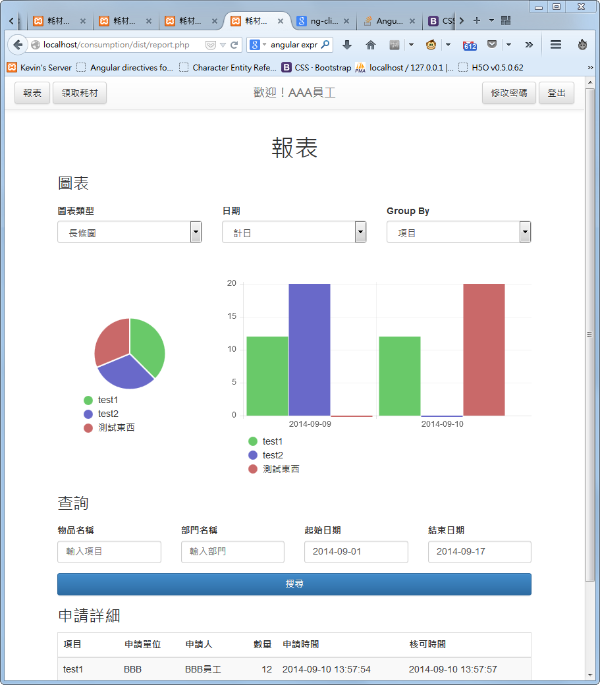
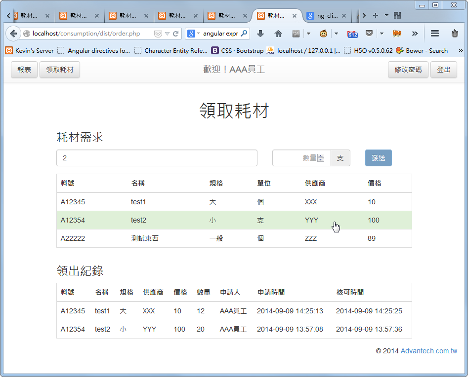
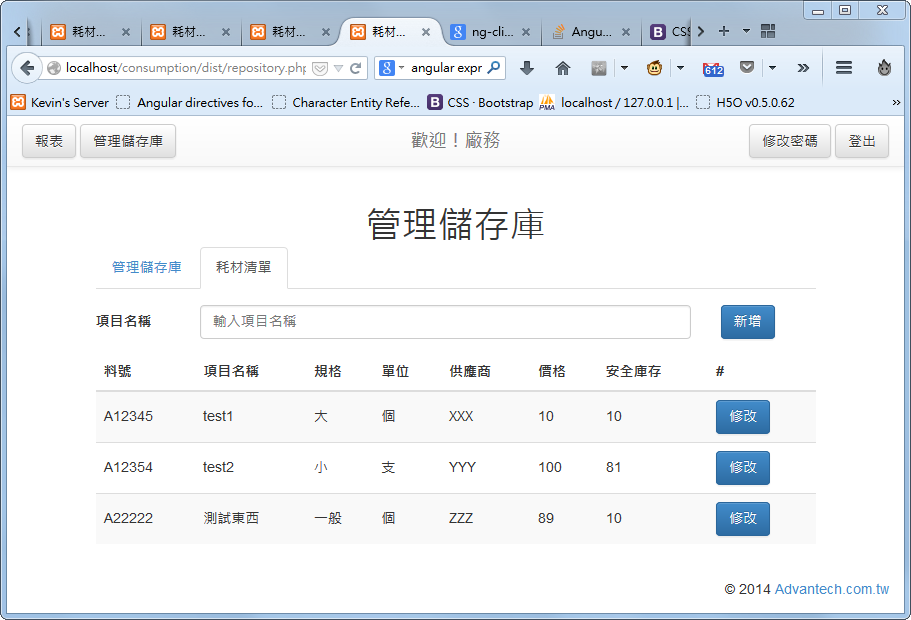
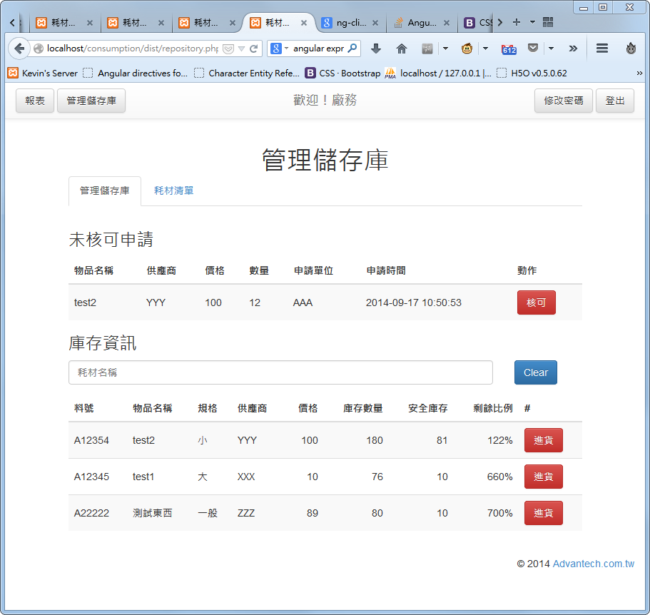

使用 Firefox, Google Chrome 或 IE10 以上的瀏覽器以支援完整功能。
預設密碼與工號相同，點右上角「修改密碼」可以改密碼。

使用搜尋功能查詢領出紀錄，並且會在上方自動產生圖表。


在耗材清單分頁，可以新增與編輯各項物品的料號、名稱、規格、單位……包括安全庫存等等。
目前只能單筆輸入，還未有大量匯入的功能。因為我不清楚平時是如何管理耗材清單的，還麻煩提供建議。

顯示領料申請。若無申請時列表會隱藏。點擊申請右方的「核可」按鈕並確認後，物品數量就會自動從儲存庫裡扣除。當然，若申請數量大於庫存數量是無法核可的。
顯示所有物品的庫存量，並且會顯示剩餘比例。剩餘比例算法為 (數量 - 安全水位) / 安全水位。若剩餘比例低於 20%，表格會呈現黃色；若低於 0%，表格會呈現紅色，表示庫存量低於安全水位。
庫存進貨時，點擊右方的「進貨」按鈕，可以增加庫存數量，並且把進貨記錄寫入資料庫。
要尋找特定物品的資訊，可以在文字欄搜尋。
目前管理頁面只有總管理員能使用。
要新增使用者，可以直接輸入工號，按新增，設定姓名、部門、權限。
或是以多行文字匯入，請參見頁面上的說明。
部門的功用︰產生圖表時可以用部門分類，並且領耗材人員可以看到同部門的領耗材紀錄。
基本上部門只是一個名稱以供辨識，在匯入使用者時也會檢查部門名稱是否存在。
GLOBAL 為預設的部門，請不要刪除。